실내건축기사(구) (2008-05-11 기출문제)
1과목: 실내디자인론
1. 다음 중 공간이 가지는 3차원적 입체감을 가장 적합하게 표현한 용어는?
- 기둥과 보
- 질감과 색채
- 점과 선
- 볼륨과 매스
(정답률: 87%)

2. 다음 중 실내디자이너의 역할과 가장 거리가 먼 것은?
- 독자적인 개성의 표현을 한다.
- 전체 매스(mass)의 구조설비를 계획한다.
- 생활공간의 쾌적성을 추구하고자 한다.
- 인간의 예술적, 서정적 욕구를 만족시키고자 한다.
(정답률: 18%)
3. 질감(texture)에 대한 설명으로 옳지 않은 것은?
- 효과적인 질감 표현을 위해서는 색채와 조명을 동시에 고려해야 한다.
- 시각으로만 지각할 수 있는 어떤 물체 표면상의 특징을 말한다.
- 질감의 선택에서 중요한 것은 스케일, 빛의 반사와 흡수 등이다.
- 나무, 돌, 흙 등이 자연 재료는 인공적인 재료에 비해 따뜻함과 친근감을 준다.
(정답률: 96%)
4. 균형의 유형 중 대칭적 균형의 의미로 가장 알맞은 것은?
- 물리적으로 불균형이지만 시각상 힘의 정도에 의해 균형을 이루는 것을 말한다.
- 가장 완전한 균형의 상태로 공간에 질서를 주기가 용이하다.
- 자연스러우며 풍부한 개성을 표현할 수 있어 능동의 균형이라고도 한다.
- 비정형균형이라고도 하며 다양한 긴장감의 표현이 가능하다.
(정답률: 90%)
5. 한국의 전통가구 중 반닫이에 관한 설명으로 옳지 않은 것은?
- 반닫이는 주로 양반층에서 장이나 농 대신에 사용하던 가구이다.
- 전면 상반부를 문짝으로 만들어 상하로 여는 가구이다.
- 반닫이는 우리나라 전역에 걸쳐서 사용되었다.
- 반닫이 안에는 의복, 책, 제기 등을 보관하였고, 위에는 이불을 얹거나 항아리, 소품 등을 얹어두었다.
(정답률: 75%)
6. 전시공간의 전시실 순회유형이 아닌 것은?
- 연속 순회 형식
- 갤러리 및 복도 형식
- 중앙홀 형식
- 하모니카 형식
(정답률: 71%)
7. 일종의 전시공간인 쇼룸(show room)의 계획에 대한 설명 중 옳지 않은 것은?
- 관람의 흐름은 막힘이 없어야 한다.
- 입구에는 세심한 디스플레이를 피한다.
- 관람자가 한 번 지나간 곳을 다시 지나가도록 한다.
- 관람에 있어 시각적 혼란을 초래하지 않도록 전후 좌우를 한꺼번에 다 보게 해서는 안된다.
(정답률: 89%)
8. 상품 진열계획에서 고객에게 가장 편한 진열높이를말하는 골든 스페이스(golden space)의 범위는?
- 400~850mm
- 850~1250mm
- 1250~1500mm
- 1500~1800mm
(정답률: 85%)
9. 다음 중 실내디자인 프로세스의 기본계획 단계에 포함되지 않는 것은?
- 건축적 요소와 설비적 요소의 분석
- 기본계획 대안들의 도면화
- 내부적 요구 분석
- 계획의 평가기준 설정
(정답률: 79%)
10. 다음 중 집합, 분리의 효과를 가장 잘 나타낸 것은?
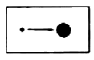
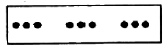
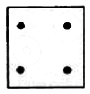
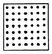
(정답률: 92%)
11. 다음의 선의 조형효과에 대한 설명 중 옳은 것은?
- 수평선은 높이, 깊이, 엄숙, 영원을 나타낸다.
- 수직선은 영원, 발전, 안전감, 고요함, 휴식감을 나타낸다.
- 사선은 정적이며, 강하고 단순하고 직접적이다.
- 곡선은 유연, 우아, 풍요, 여성스런 느낌을 준다.
(정답률: 89%)
12. 상반된 성격의 결합으로 극적인 분위기를 주는 디자인 원리는?
- 균형
- 대비
- 리듬
- 비례
(정답률: 90%)
13. 실내디자이너의 작업은 크게 3그룹으로 분류할 수 있는데 그 분류에 해당되지 않는 것은?
- interior designer
- furniture designer
- interior decorator
- craft designer
(정답률: 86%)
14. 실내 디자인의 계획 과정에 대한 설명 중 틀린 것은?
- 기획에서는 공간의 사용목적, 예산, 완성 후 운영에 이르는 사항들을 종합적으로 검토한다.
- 계획은 어느 정도 추상적이고 개념적인 과정으로서 디자인의 목적을 명확히 하는 단계이다.
- 실시설계는 경영, 운영, 구상, 경제면의 합리적 실현을 위해 주안점을 두는 과정이다.
- 설계는 계획의 전개로서 인간의 요구에 부응하는 실제적인 공간을 구체화하는 단계이다.
(정답률: 58%)
15. 인테리어 디자인의 계획조건을 외부적 조건과 내부적 조건으로 구분할 때 다음 중 외부적 조건에 속하지 않는 것은?
- 입지적 조건
- 경제적 조건
- 건축적 조건
- 설비적 조건
(정답률: 88%)
16. 상점계획에서 파사드 구성에 요구되는 소비자 구매심리 5단계에 속하지 않는 것은?
- 주의(attention)
- 욕망(desire)
- 기억(memory)
- 유인(attraction)
(정답률: 75%)
17. 디자인 원리 중 통일에 대한 설명으로 옳은 것은?
- 각각 다른 구성요소들이 전체로서 동일한 이미지를 이루게 한다.
- 규칙적인 요소들의 반복으로 시각적인 질서를 이루게 한다.
- 전체적인 조립방법이 모순 없이 질서를 잡는다.
- 대립, 변이, 점층 등의 방법이 사용된다.
(정답률: 54%)
18. 다음의 천장에 대한 설명 중 옳은 것은?
- 천장을 낮추면 영역의 구분이 가능하며 친근하고 아늑한 공간이 될 수 있다.
- 천장은 형태는 실내공간의 음향에 영향을 주지 않는다.
- 천장은 시각적 흐름이 시작되는 곳이기에 지각의 느낌에 영향을 주지 않는다.
- 내부공간의 어느 요소보다도 조형적으로 제약을 많이 받는다.
(정답률: 75%)
19. 공간의 적정치수 선정방법에 해당되지 않은 것은? (단, α는 적정치수를 끌어내기 위한 여유치수이다.)
- 최소값 +α의 방법
- 최대값 -α의 방법
- 조정값 ±α의 방법
- 목표값 ±α의 방법
(정답률: 84%)
20. 다음 중 장식조명에 속하지 않는 것은?
- 브라켓(bracket)
- 펜던트(pendant)
- 픽토그램(pictogram)
- 샹들리에(chandelier)
(정답률: 89%)
2과목: 색채학
21. 배경색은 다르고 녹색은 동일한 다음 그림에 대한 설명으로 옳은 것은?
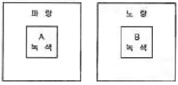
- A의 녹색은 B의 녹색보다 파랑 기미를 띤다.
- A의 녹색은 B의 녹색보다 노랑 기미를 띤다.
- A의 녹색은 B의 녹색보다 어두워 보인다.
- B의 녹색은 A의 녹색보다 앞으로 나와 보인다.
(정답률: 23%)
22. 먼셀의 색상환에서 색상의 중심색을 나타내는 숫자는?
- 1
- 5
- 10
- 15
(정답률: 88%)
23. 다음 중 색이 전달하는 감성을 적절히 활용한 예는?
- 커피 캔의 색을 파랑으로 한다.
- 새콤한 맛은 밝은 연두로 한다.
- 보라색으로 식욕을 돋군다.
- 정력제는 흰색으로 한다.
(정답률: 77%)
24. 먼셀 색입체에 관한 설명 중 맞는 것은?
- 모든 색은 흑(B) + 백(W) + 순색(C) = 100% 가 되는 혼합비에 의하여 구성되어 있다.
- 먼셀의 색상에서 기본색은 빨강, 노랑, 녹색, 파랑, 보라의 5색이다.
- 먼셀의 색입체는 주판알과 같은 복원추체 모양이다.
- 무채색 축을 중심으로 24 색상을 가진 등색상 삼각형이 배열되어 있다.
(정답률: 67%)
25. 다음 중 대비효과를 이루는 배색은?
- 빨강, 보라
- 주황, 연두
- 녹색, 남색
- 노랑, 남색
(정답률: 86%)
26. 사무실의 색채계획에 관한 설명 중 가장 거리가 먼 것은?
- 능률적이고 쾌적한 업무환경을 위해 밝은 색상을 벽면에 사용한다.
- 정신적 업무공간에서는 한색계통을 사용한다.
- 생동감, 시각적 효과를 위해 부분적으로 강조색을 사용한다.
- 사무실의 이상적인 및 반사를 위해서는 벽면의 반사율을 60% 이상으로 조정해야 한다.
(정답률: 58%)
27. 오스트발트의 등색상 삼각형에 있어서 등백색계열을 나타내는 것은?
- pl - pi - pg
- la - na - pa
- nl - ni - pi
- lg - ni - pl
(정답률: 58%)
28. 다음 중 시안이 되는 RGB 코드는?
- (0, 255, 255)
- (255, 255, 0)
- (255, 0, 255)
- (255, 0, 0)
(정답률: 72%)
29. salmon, cobalt blue, chrome yellow 등은 어떤 기준의 색명인가?
- 계통색명
- 관용색명
- 표준색명
- ISCC-NBS 일반색명
(정답률: 77%)
30. 모니터 화면의 검은색 조정에 관한 설명으로 옳은 것은?
- 모니터 화면의 가장자리가 마치 검은색 띠를 두른 것처럼 보이는 부분은 전압(voltage)영역이다.
- 모니터 화면 중에서 영상이나 텍스트를 디스플레이하는 부분은 전류의 전압이 0인 무전압(non voltage)영역이다.
- 모니터의 부착된 이미지 사이즈 조절버튼으로 전압 영역 폭의 넓이를 약 2~3cm가 되도록 한다.
- RGB 각각에 R=0, G=0, B=0과 같은 수치를 주어 디스프레이하면 전압영역이 검은색이 된다.
(정답률: 95%)
31. 똑같은 에너지를 가진 각 파장의 단색광에 의하여 생기는 밝기의 감각은?
- 시감도
- 명순응
- 색순응
- 항상성
(정답률: 64%)
32. 불안감을 느끼는 사람에게 안정을 취하게 할 수 있는 공간색으로 적합한 것은?
- 파랑
- 흰색
- 회색
- 노랑
(정답률: 55%)
33. 다음 보색에 관한 설명으로 틀린 것은?
- 보색인 2색은 색상환상에서 90° 위치에 있는 색이다.
- 두 가지 색광을 섞어 백색광이 될 때 이 두가지 색광을 서로 상대색에 대한 보색이라고 한다.
- 두 가지 색의 물감을 섞어 회색이 되는 경우, 그 두 색은 보색관계이다.
- 물감에서 보색의 조합은 적 - 청록, 녹 - 자주이다.
(정답률: 67%)
34. 색채의 유목성(주목성)에 관한 설명 중 거리가 먼 것은?
- 어떤 대상을 의도적으로 보고자 하지 않아도 사람의 시선을 끄는 색의 성질을 말한다.
- 어떤 색 자제보다도 배경색이 무엇이냐에 따라 그정도가 달라진다.
- 글자나 기호, 그림글자(픽토그램) 등 알아보기 쉬운 정도를 가리킨다.
- 보통 잘 보지 않는 색, 특수한 연상을 일으키는 색등은 주목성이 변할 수 있다.
(정답률: 57%)
35. 스캔된 원본의 색들과 인쇄된 출력물의 색들을 맞추기 위한 색채관리시스템(Color Management System, CMS)의 기준이 되는 색공간은?
- RGB 색체계
- CMYK 색체계
- CIE XYZ 색체계
- HSB 색체계
(정답률: 36%)
36. 색체의 감정에 대한 설명으로 옳은 것은?
- 주황색 ㆍ 황색 등의 색상은 수축감을 느끼게 하며 생리적, 심리적으로 긴장감을 준다.
- 붉은색 계통의 색은 시간의 경과가 짧게 느껴지고, 푸른색 계통은 시간의 경과가 길게 느껴진다.
- 난색계통의 고명도 ㆍ 고채도를 사용하면 흥분감을 준다.
- 색의 중럄감은 주로 채도에 의하여 좌우된다.
(정답률: 75%)
37. 다음 잔상에 관한 설명으로 잘못된 것은?
- 시신경이나 뇌의 이상으로 원래의 자극과 다른 감각을 일으키는 현상이다.
- 어떤 자극에 의해 원자극과 동질 또는 이질의 감각 경험을 일으키는 현상이다.
- 망막의 흥분 상태의 지속성에 기인하는 현상이다.
- 충동이 시신경에 발한 그대로 계속되고 있는 결과이다.
(정답률: 82%)
38. 시세포에 대한 설명 중 옳은 것은?
- 눈의 망막 중 중심와에는 간상체만 존재한다.
- 추상체는 색을 구별하며, 간상체는 명암을 구별하는데 사용된다.
- 망막에는 약 1억 2천만 개의 추상체가 있다.
- 간상체 시각은 장파장에 민감하다.
(정답률: 70%)
39. 색역 압축 방법(color gamut compressionmethod)은 무엇을 극복하기 위하여 고안된 방법인가?
- 색역이 다른 컬러간의 차이
- 색역이 다른 컬러들의 좌표 재현
- 색역이 다른 컬러들의 색역 맵핑 수행
- 색역이 다른 클립핑 방법
(정답률: 30%)
40. 미각과 색채의 관계로 연결된 것 중 잘못된 것은?
- 쓴맛 : gray
- 단맛 : red
- 신맛 : yellow
- 짠맛 : blue-green
(정답률: 62%)
3과목: 인간공학
41. 다음 중 일반적인 지침(指針)의 설계의 요령으로 볼 수 없는 것은?
- 선각이 약 20˚ 정도 되는 뾰족한 지침을 사용한다.
- 시차를 줄이기 위하여 지침은 눈금면과 밀착시킨다.
- 지침의 끝은 작은 눈금과 맞닿고, 겹치도록 해야한다.
- 원형 눈금의 경우 지침의 색은 선단에서 눈금의 중심까지 칠한다.
(정답률: 57%)
42. 인체 골격이 하는 주요 기능이 아닌 것은?
- 몸을 지탱하며 그 외형을 지지한다.
- 체강(體腔)을 형성하며 체강내의 장기를 보호한다.
- 골격 내부에 골수를 넣어 조혈작용을 한다.
- 대뇌의 지시에 따라 이완, 수축을 해 골격운동에 기여한다.
(정답률: 60%)
43. 다음 중 청각에 관한 설명으로 옳은 것은?
- 1폰(phon)은 40손(sone)에 해당하며, 음폭을 나타내는 단위이다.
- 귀는 해부학적으로 외이, 중이, 내이로 구분되며, 고막은 내이에 속한다.
- 가청범위란 음의 높낮이에 관계없이 일정한 음이 흐르는 것을 말한다.
- masking 이란 2개 이상의 음이 동시에 존재할 때 음의 한 성분이 다른 성분으로 인해 감소되는 효과를 말한다.
(정답률: 78%)
44. 신체 부위의 운동 동작에서 몸의 중심선으로부터의 이동을 의미하는 것은?
- 굴곡(flexion)
- 신전(extension)
- 내전(adduction)
- 외전(abduction)
(정답률: 38%)
45. 다음 중 계기판(計器板)의 눈금 숫자를 표시하는 방법으로 가장 적절하지 않은 것은?
- 0 – 1 – 2 – 3 – 4 – 5
- 0 – 4 – 8 – 12 – 16 – 20
- 0 – 5 – 10 – 15 – 20
- 0 – 100 – 200 – 300
(정답률: 69%)
46. 음의 크기와 음의 높이를 측정하는데 기준이 되는 음의 진동수는 몇 Hz인가?
- 1
- 10
- 100
- 1000
(정답률: 65%)
47. 인간의 눈 구조 중 사진기의 필름(Film)의 역할을 하는 곳은?
- 수정체
- 초자체
- 홍채
- 망막
(정답률: 58%)
48. 다음 중 인간 실수 확률에 대한 추정 기법으로 볼수 없는 것은?
- 위급 사건 기법
- 조작자 행동 나무
- 작업상황 개선
- 직무 위급도 분석
(정답률: 59%)
49. 자극의 지각에 있어 JND(Just Noticeable Difference)가 의미하는 것은?
- 최소자극역치
- 자극포화치
- 자극둔화치
- 자극변화감지역치
(정답률: 46%)
50. 다음 중 광원으로부터의 직사 휘광(glare)을 처리하는 방법으로 적절하지 않은 것은?
- 광원의 휘도를 줄이고, 수를 늘린다.
- 광원을 시선에서 되도록 가깝게 한다.
- 가리개(shield), 갓(hood) 등을 사용한다.
- 휘광원 주위를 밝게 하여 광도비를 줄인다.
(정답률: 95%)
51. 일반적으로 신체에 전신진동이 주어질 경우 가장 큰 영향을 미치는 주파수의 범위로 가장 적절한 것은?
- 1 ~ 4Hz
- 4 ~ 12Hz
- 20 ~ 100Hz
- 100Hz 이상
(정답률: 22%)
52. [보기]와 같은 체계 설계 과정의 주요 단계를 순서대로 올바르게 나열한 것은?
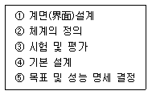
- ② → ① → ⑤ → ④ → ③
- ⑤ → ② → ④ → ① → ③
- ④ → ⑤ → ② → ① → ③
- ① → ② → ④ → ⑤ → ③
(정답률: 58%)
53. 피부로 느낄 수 있는 감각 중 감수성이 가장 높은 것은?
- 통각
- 압각
- 냉각
- 온각
(정답률: 11%)
54. 표적 물체나 관측자 또는 모두가 움직이는 경우에 는 시력의 역치(threshold)가 감소하게 되는데 이러한 상황에서의 시식별 능력을 무엇이라 하는가?
- 버니어 시력(vernier acuity)
- 입체 시력(stereoscopic acuity)
- 동시력(dynamic visual acuity)
- 최소 가분 시력(minimum separable acuity)
(정답률: 10%)
55. 다음 중 일반적으로 청력손실이 가장 크게 나타나는 진동수는 약 몇 Hz인가?
- 500
- 2000
- 4000
- 10000
(정답률: 6%)
56. 다음 중 정보의 입력장치에 있어서 청각장치보다 시각장치의 사용이 유리한 경우는?
- message가 간단한 경우
- message가 후에 재 참조되는 경우
- message가 시간적인 사상을 다루는 경우
- message가 즉각적인 행동을 요구하는 경우
(정답률: 67%)
57. 다음 중 시각적 점멸 융합 주파수(VFF)에 영향을 주는 변수들에 대한 설명으로 옳은 것은?
- 연습의 효과는 아주 크다.
- 휘도만 같으면 색은 VFF에 영향을 주지 않는다.
- VFF는 조명 강도의 대수치에 지수적으로 비례한다.
- 시표와 주변의 휘도가 같을 때에 VFF는 최소가 된다.
(정답률: 32%)
58. 다음 중 단회전(單回專)용으로 형상 암호화된 조종장치에 해당하는 것은?
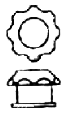
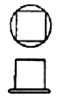
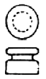
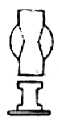
(정답률: 39%)
59. 다음 중 동작 경제의 원칙으로 틀린 것은?
- 동작의 범위는 최소로 한다.
- 손의 동작은 항상 직선으로 동작한다.
- 가능한 한 관성, 중력 등을 이용하여 작업한다.
- 휴식시간을 제외하고는 양손을 동시에 쉬지 않도록 한다.
(정답률: 54%)
60. 다음 색 중 파장이 가장 짧은 것은?
- 적색
- 녹색
- 청색
- 황색
(정답률: 54%)
4과목: 건축재료
61. 다음 도장재료 중 물이 증발하여 수지입지가 굳는 융착건조 경화를 하는 것은?
- 알키드 수지
- 에폭시 수지
- 불소수지도료
- 합성수지 에멀션 페인트
(정답률: 32%)
62. 금속재료에 관한 설명 중 옳지 않은 것은?
- 이(異)종금속이 습기가 있는 곳에서 접촉하고 있으면 이온화 경향이 작은 금속이 부식된다.
- 납은 방사선의 투과도가 낮아 방사선 차폐용으로 이용된다.
- 주철은 다양한 성질을 갖는 철제합금의 일종으로 선철에 다소의 철부스러기를 넣어 조제한 것이다.
- 콘크리트속의 철근이 부식하지 않는 것은 콘크리트가 알칼리성이기 때문이다.
(정답률: 18%)
63. 다음의 목재 판재에 대한 설명 중 옳지 않은 것은?
- 판재의 양쪽면 중에 수심쪽을 널안, 수피쪽을 널밖이라고 한다.
- 널밖에 비해 널안이 단단하고 수축이 적다.
- 널밖 쪽은 대패질하면 광택이 나고 거스름도 적어 마감재 표면으로 사용하면 좋다.
- 수축변형시 널밖쪽에서 배부른 변형이 발생하기 때문에 문틀의 경우 문지방은 널밖을 아래로 하면 문짝이 잘 움직인다.
(정답률: 41%)
64. 내구성 및 강도가 크고 외관이 수려하나 함유광물의 열팽창 계수가 달라 내화성이 약한 석재료 외장, 내장, 구조재, 도로포장재, 콘크리트 골재 등에 사용되는 것은?
- 응회암
- 화강암
- 화산암
- 대리석
(정답률: 54%)
65. 기성 배합 모르타르 바름의 설명으로 틀린 것은?
- 현장에서의 시공이 간편하다.
- 공장에서 미리 배합하므로 재료가 균질하다.
- 접착력 강화제가 혼입되기도 한다.
- 주로 바름 두께가 두꺼운 경우에 많이 쓰인다.
(정답률: 50%)
66. 콘크리트의 혼화재료 중 혼화제에 속하는 것은?
- 플라이애시
- 실리카흄
- 고로슬래그 미분말
- 고성능감수제
(정답률: 27%)
67. 다음의 비철금속에 대한 설명 중 옳지 않은 것은?
- 구리는 암모니아 등의 알칼리성 용액에는 침식이 된다.
- 황동은 구리보다 단단하고 주조가 잘된다.
- 알루미늄은 산과 알칼리에 침식되지 않는다.
- 납은 내산성이 크나 알칼리에는 침식된다.
(정답률: 63%)
68. 콘크리트의 강도 특성에 관한 설명 중 부적당한 것은?
- 콘크리트 강도에 영향을 주는 인자로서 물시멘트비, 양생 방법 등이 있다.
- 콘크리트 압축강도시험을 위한 공시체의 직경에 대한 높이의 비는 일반적으로 2이다.
- 일반적으로 콘크리트의 인장강도는 압축강도의 1/10 정도이며 직접인장시험법을 많이 사용한다.
- 공시체의 압축강도 시험시 재하속도, 저면의 요철등은 강도에 영향을 미친다.
(정답률: 50%)
69. 다음의 플라이애시에 대한 설명 중 틀린 것은?
- 콘크리트의 워커빌리티를 좋게 하고 사용 수량을 감소시킨다.
- 초기 재령의 강도는 다소 작으나 장기 재령의 강도는 크다.
- 시멘트의 수화열에 의한 균열 발생을 억제한다.
- 건조 수축이 다소 심하므로 매스콘크리트에 사용은 피한다.
(정답률: 64%)
70. 시멘트 모르타르나 석회, 또는 석고 등을 흙손을 사용하여 바를 경우의 주의사항 중 옳지 않은 것은?
- 바탕조정은 아주 중요한 작업이므로 가능한 한 바탕면이 유리면처럼 될 수 있도록 조정하여 둔다.
- 재료배합은 원칙적으로 바탕에 가까운 바름층일수록 배합, 정벌바름에 가까울수록 빈배합으로 한다.
- 재료의 비빔에는 기계비빔과 손비빔이 있으며 균일할 때까지 충분하게 섞는다.
- 바름면의 흙손작업은 갈라지거나 들뜨는 것을 방지하기 위하여 바름층이 굳기 전에 끝낸다.
(정답률: 48%)
71. 미장재료의 구성재료에 대한 설명 중 옳지 않은 것은?
- 부착재료는 마감과 바탕재료를 붙이는 역할을 한다.
- 무기혼화재료는 시공성 향상 등을 위해 첨가된다.
- 풀재는 강도증진을 위해 첨가된다.
- 여물재는 균열방지를 위해 첨가된다.
(정답률: 44%)
72. 유리섬유를 불규칙하게 상온가압하여 성형한 판으로 알칼리 이외의 화학약품에 대한 저항성이 있고 설비재, 내외 수장재로 쓰이는 것은?
- 폴리에스테르 강화판
- 멜라민치장판
- 페놀수지판
- 염화비닐판
(정답률: 46%)
73. 다음의 설명에 해당하는 유리에 발생하는 작용은?
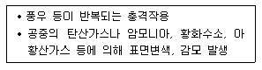
- 풍화작용
- 크리프작용
- 광학작용
- 조성성분의 변이 작용
(정답률: 84%)
74. 스크래치 타일에 대한 설명으로 옳은 것은?
- 표면이 긁힌 모양인 외장형 타일로, 습식제법으로 만든 성형품이다.
- 소형 타일로 바닥에 많이 쓰이고 다수의 색을 조합하여 화려한 무늬가 특색이다.
- 계단 모서리의 미끄럼 방지용으로 주로 사용되며, 내마모성은 금속보다도 우수하다.
- 고온으로 충분한 소성을 거친 타일로, 석기질이며 시유를 한다.
(정답률: 61%)
75. 다음 도료 중 건조시간이 가장 긴 것은?
- 유성페인트
- 멜라민수지도료
- 래커
- 수성페인트
(정답률: 70%)
76. 다음 중 열가소성 합성수지에 속하지 않는 것은?
- 염화비닐수지
- 폴리에틸렌수지
- 멜라민수지
- 폴리스티렌수지
(정답률: 66%)
77. 제재판재 또는 소각재 등의 부재를 섬유방향이 평행하게 접착시킨 것은?
- 파티클 보드
- 코펜하겐 리브
- 합판
- 집성목재
(정답률: 50%)
78. 다음 점토제품 중 소성온도가 높은 것에서 낮은 순서로 배열된 것은?
- 자기 – 석기 – 도기 – 토기
- 자기 – 도기 – 석기 – 토기
- 도기 – 자기 – 석기 – 토기
- 도기 – 석기 – 자기 – 토기
(정답률: 85%)
79. 시멘트의 성질에 관한 설명 중 틀린 것은?
- 포틀랜드시멘트의 3가지 주요 성분은 실리카(SiO2), 알루미나(Al2O3), 석회(CaO)이다.
- 시멘트는 응결경화시 수축성 균열이 생겨 변형이 일어난다.
- 시멘트의 응결 및 강도 증진은 분말도가 높을수록 빨라진다.
- 슬래그의 함유량이 많은 고로시멘트는 수화열의 발생량이 많다.
(정답률: 40%)
80. 섬유포화점 이하에 있어서 함수율의 감소에 따른 목재의 성질 변화에 대한 설명으로 옳은 것은?
- 강도가 증대하고 인성이 증가한다.
- 강도가 증대하고 인성이 감소한다.
- 강도가 감소하고 인성이 증가한다.
- 강도가 감소하고 인성이 감소한다.
(정답률: 31%)
5과목: 건축일반
81. 다음중 목구조의 특징이 아닌 것은?
- 가볍고 비중에 비해 강도가 크다.
- 열전도율이 적어 보온의 효과가 있다.
- 부재의 규격화가 가능하고 공사기간이 짧다.
- 건습에 의한 변형 및 팽창 수축이 적다
(정답률: 79%)
82. 건축물에서 계단을 대체하여 설치하는 경사(Ramp)의 최대 경사도는?
- 1 : 6
- 1 : 8
- 1 : 10
- 1 : 12
(정답률: 50%)
83. 다음과 같은 특징을 갖는 한국전통건축의 공포 양식은?
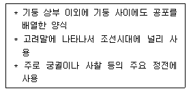
- 주심포계 양식
- 민도리 양식
- 다포계 양식
- 익공계 양식
(정답률: 55%)
84. 높이 31m를 넘는 각 층의 바닥면적 중 최대바닥 면적의 2,000m2(거실 바닥면적은 1,800m2)일 때 비상용 승강기의 최소 설치 대수는?
- 1대
- 2대
- 3대
- 4대
(정답률: 47%)
85. 방염대상물품의 방염성능기준으로 틀린 것은?
- 탄화한 면적은 50cm2 이내, 탄화한 길이는 20cm 이내
- 버너 불꽃을 제거한 때부터 불꽃을 올리지 아니하고 연소하는 상태가 그칠 때까지 시간은 30초 이내
- 버너 불꽃을 제거한 때부터 불꽃을 올리며 연소하는 상태가 그칠 때까지 시간은 20초이내
- 불꽃에 의하여 완전히 녹을 때까지 불꽃의 접촉회수는 2회 이상
(정답률: 69%)
86. 방화벽의 구조에 대한 기준 내용으로 옳지 않은 것은?
- 내화구조로서 홀로 설 수 있는 구조일 것
- 방화벽에 설치하는 출입문의 너비 및 높이는 각각 2.5m 이하로 할 것
- 방화벽에 설치하는 출입문에는 을종방화문을 설치 할 것
- 방화벽의 양쪽 끝과 위쪽 끝을 건축물의 외벽 및 지붕면으로부터 0.5m 이상 튀어 나오게 할 것
(정답률: 57%)
87. 건축물에 설치하는 피뢰설비에 관한 기준 내용으로 옳은 것은?
- 낙뢰의 우려가 있는 건축물 또는 높이 20m 이상의 건축물에 설치해야 한다.
- 위험물저장 및 처리시설에 설치하는 피뢰설비는 한국산업규격이 정하는 보호등급 Ⅰ 이상이어야 한다.
- 돌침은 건축물의 맨 윗부분으로부터 20cm 이상 돌출시켜 설치한다.
- 피뢰설비의 재료는 최소 단면적으로 피복이 없는 동선을 기준으로 수뢰부 30mm2 이상, 인하도선 15mm2 이상이어야 한다.
(정답률: 45%)
88. 보강 블록조에서 내력벽 길이의 총합계가 45m이고, 그 층의 건물면적이 300m2일 경우 내력벽의 벽량은?
- 10㎝/m2
- 15㎝/m2
- 30㎝/m2
- 45㎝/m2
(정답률: 84%)
89. 철근콘크리트 구조에서 철근의 이음에 관한 설명 으로 옳지 않은 것은?
- 이음의 위치는 되도록 응력이 적은 곳에서 실시한다.
- 철근은 설계도, 또는 시방서에서 요구하거나 허용한 경우 또는 책임기술자의 승인하에서만 이음을 할수 있다.
- 일반적으로 D35를 초과하는 철근은 겹침이음을 하지 않는다.
- 인장력을 받는 이형철근의 겹침이음길이는 300mm 미만이어야 한다.
(정답률: 39%)
90. 서양 중세 고딕건축의 구성요소와 관계가 가장 먼것은?
- 플라이 버트레스(flying buttress)
- 첨두형 아치(pointed arch)
- 펜덴티브(pendentive)
- 스테인드 글래스(stained glass)
(정답률: 54%)
91. 다음 중 비상경보설비설치를 하여야 할 특정소방대상물로 옳지 않은 것은?
- 무창층 - 바닥면적 150m2 이상
- 지하층 - 바닥면적 150m2 이상
- 옥내작업장 - 작업하는 근로자수가 50인 이상
- 지하가 중 터널 - 길이 300m 이상
(정답률: 66%)
92. 다음 중 내화·내구적이나 풍압력, 지진력, 기타 인위적 횡력에 극히 약해 고층건물에 부적당한 구조는?
- 벽돌구조
- 철골구조
- 목구조
- 철근콘크리트구조
(정답률: 59%)
93. 건축관련법규 상 거실의 용도에 따른 조도기준이 틀린 것은? (바닥에서 85센티미터의 높이에 있는 수평면의 조도임)
- 오락(오락일반) : 150록스
- 작업(포장·세척) : 150록스
- 집무(일반사무) : 150록스
- 거주(식자·조리) : 150록스
(정답률: 30%)
94. 서양고전건축에서 엔타블레이춰(Entablature)의 구성요소가 아닌 것은?
- 스타일로베이트(Stylobate)
- 아키트레이브(Architrave)
- 프리즈(Frieze)
- 코니스(Cornice)
(정답률: 39%)
95. 다음의 철근콘크리트 압축부재의 띠철근에 대한 기준 내용 중 ( )안에 알맞은 것은?
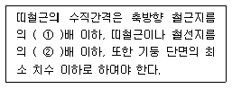
- ① 16, ② 48
- ① 48, ② 16
- ① 12, ② 24
- ① 24, ② 12
(정답률: 12%)
96. 종교시설의 용도에 쓰이는 건축물로서 당해 용도에 쓰이는 거실의 바닥면적의 합계가 최소 얼마 이상 일 경우 거실의 벽 및 반자의 실내에 접하는 부분(반자 돌림대·창대 기타 이와 유사한 것을 제외한다)의 마감을 불연재료·준불연료재료 또는 난연재료로 하여야 하는가?
- 100m2
- 200m2
- 250m2
- 300m2
(정답률: 48%)
97. 다음 중 슬래브나 보의 바닥면의 피복두께에 대한 허용오차를 상단보다 더욱 엄격하게 적용하는 가장 주된 이유는?
- 인장을 받는 부위이므로 균열을 방지하기 위하여
- 내화성을 확보하기 위하여
- 골재의 이동성을 확보하기 위하여
- 거푸집의 설치 오차를 수용하기 위하여
(정답률: 8%)
98. 그리스, 로마건축에 대한 추억, 지성 및 아름다움 기품 재현을 목표로 18세기 중엽이후 발생된 사조는?
- 르네상스
- 낭만주의
- 고전주의
- 절충주의
(정답률: 43%)
99. 로마건축의 5가지 오더(order)에 속하지 않는 것은?
- 콤포지트(composite)식
- 도릭(doric)식
- 터스칸(tuscan)식
- 로마네스크(romanesque)식
(정답률: 74%)
100. 다음 중 목구조에서 1층 건물일 때 일반적으로 사용되지 않는 부재는?
- 토대
- 통재기능
- 멍에
- 중도리
(정답률: 61%)
6과목: 건축환경
101. 환기에 관한 설명 중 옳지 않은 것은?
- 실내외의 온도차가 작을수록 자연환기량은 작아진다.
- 중력환기의 경우 실내가 고온측일 때, 일반적으로 중성대의 하부가 공기의 유입측으로, 상부는 공기의 유출측이 된다.
- 어느 실의 환기량을 실의 용적으로 나눈 값을 환기 횟수라고 한다.
- 풍력환기의 경우 실외의 풍속이 커지면 환기량은 작아진다.
(정답률: 58%)
102. 다음의 음향계획에 관한 설명 중 옳지 않은 것은?
- 음이 실내에서 고루 분산되도록 한다.
- 반사음이 한 곳으로 집중되지 않도록 한다.
- 실내에서 음이 명료하게 들리기 위해서는 충분한 반사음이 필요하다.
- 실의 사용목적에 적합한 음의 울림을 확보하기 위해서는 적절한 실용적을 확보할 필요가 있다.
(정답률: 67%)
103. 실내조명설계에서 가장 먼저 고려해야 할 사항은?
- 조명방식의 선정
- 소요조도의 결정
- 전등종류의 선정
- 조명기구의 배치계획
(정답률: 62%)
104. 다음 설명에 알맞은 건물군의 형태에 따른 기류 유형은?
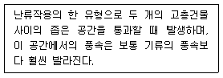
- 벤추리 효과
- 풍압상승 효과
- 피라미드 효과
- 셸터 효과
(정답률: 31%)
1⑤. 공기조화방식 중 단일덕트재열방식에 대한 설명으로 옳지 않은 것은?
- 부하특성이 다른 여러 개의 실이나 존이 있는 건물에 적합하다.
- 재열기가 실내측에 있을 누수의 염려가 있다.
- 잠열부하가 많은 경우나 장마철 등의 공조에 적합하다.
- 여름에는 보일러를 가동할 필요가 없다.
(정답률: 50%)
106. 전열에 관한 설명 중 옳은 것은?
- 벽체의 열전달저항은 벽체에 닿는 풍속이 클수록 크다.
- 유리의 열관류저항은 그 양측 표면 열전달저항의 합의 2배 값과 거의 같다.
- 벽이 결로 등에 의해 습기를 포함하면 열관류저항이 커진다.
- 벽과 같은 고체를 통하여 유체(공기)에서 유체(공기)로 열이 전해지는 현상을 열관류라고 한다.
(정답률: 50%)
107. 건축화 조명에 관한 설명으로 옳은 것은?
- 광원의 휘도가 높아지므로 작업면의 조도가 높다.
- 건축구조체의 일부분이나 구조적인 요소를 이용하여 조명하는 방식이다.
- 발광면이 크기 때문에 빛이 확산하여 눈부심이 생긴다.
- 코오브 조명은 일종의 직접조명방식이다.
(정답률: 73%)
108. 건물 외벽의 열관류 저항값을 높이는 방법으로 옳지 않은 것은?
- 벽체에 단열재를 사용한다.
- 열전도율이 낮은 재료를 사용한다.
- 벽체 내에 공기층을 둔다.
- 외벽의 표면 열전달율을 크게 유지한다.
(정답률: 72%)
109. 1기압 20℃ 공기 중의 음속을 340m/s라 할 때 1000Hz음의 파장은?
- 17m
- 0.34m
- 10.8m
- 1.36m
(정답률: 81%)
110. 임펠러의 원심력에 의해 냉매가스를 압축하는 것으로, 중ㆍ대형 규모의 중앙식 공조에서 냉방용으로 사용되는 냉동기는?
- 왕복동식 냉동기
- 스크류식 냉동기
- 흡수식 냉동기
- 터보식 냉동기
(정답률: 42%)
111. 다음 중 겨울철 벽체 내부에 생기는 결로를 방지하기 위한 대책과 가장 거리가 먼 것은?
- 외단열을 한다.
- 벽체내부로 수증기의 침입을 억제한다.
- 실내측에 중공층을 설치한다.
- 벽체내부를 노점온도이상으로 유지한다.
(정답률: 53%)
112. 다음 중 실내공간의 환기가 가장 원활하게 이루어질 수 있는 벽면의 창호계획은? (단, 창문의 절대면 적은 같다.)
- 하부에만 창문을 설치한다.
- 상부에만 창문을 설치한다.
- 1/2 높이에 창문을 설치한다.
- 상하부에 크기가 동일한 창문을 나누어 설치한다.
(정답률: 40%)
113. 강당의 환기용 천장 디퓨저에서의 음압레벨이 500Hz에서 35dB이다. 이 디퓨저가 모두 10개가 있을때 환기구 전체에서 발생하는 음압레벨은 얼마인가?
- 40dB
- 45dB
- 50dB
- 55dB
(정답률: 65%)
114. 다음의 설명에 알맞은 급수방식은?
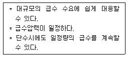
- 수도직결방식
- 고가탱크방식
- 압력탱크방식
- 펌프직송방식
(정답률: 59%)
115. 벽체의 전열에 관한 기술 중 가장 적당한 것은?
- 콘크리트와 벽돌을 비교하면 콘크리트가 열통과가 어려운 재료이다.
- 공기층의 단열효과는 그 기밀성과는 관계가 없다.
- 벽체의 열전달 저항은 벽체에 닿는 풍속의 크게 될수록 작아진다.
- 보온재는 물에 젖어도 단열성능은 변하지 않는다.
(정답률: 47%)
116. 실내공기오염의 종합적 지표로서의 오염물질은?
- 부유분진
- 포름알데히드
- 이산화탄소
- 일산화탄소
(정답률: 50%)
117. 실내의 조도가 옥외의 조도 몇 %에 해당하는가를 나타내는 값은?
- 주광률
- 광속발산도
- 휘도대비
- 시감도
(정답률: 88%)
118. 다음 중 인동간격의 결정시 고려해야 할 사항과 가장 거리가 먼 것은?
- 태양의 고도
- 대지 경사도
- 전면건물의 연면적
- 건물의 방위각
(정답률: 35%)
119. 배경소음에 대한 설명으로 옳은 것은?
- 측정대상음 이외의 주위소음
- 어느 장소에서나 일정한 소음
- 저 주파수 영역에서의 소음
- 고 주파수 영역에서의 소음
(정답률: 72%)
120. 잔향시간에 대한 설명 중 틀린 것은?
- 잔향시간이 너무 길면 음의 명료도가 저하된다.
- 실내의 잔향음의 대소를 평가하는 지표이다.
- 잔향시간은 실태가 확장음장이라고 가정하여 구해진 개념이다.
- 음악감상을 주로 하는 실은 대화를 주로 하는 실보다 짧은 잔향시간이 요구된다.
(정답률: 63%)